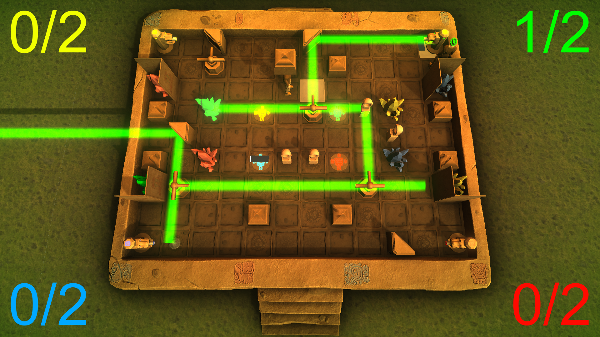
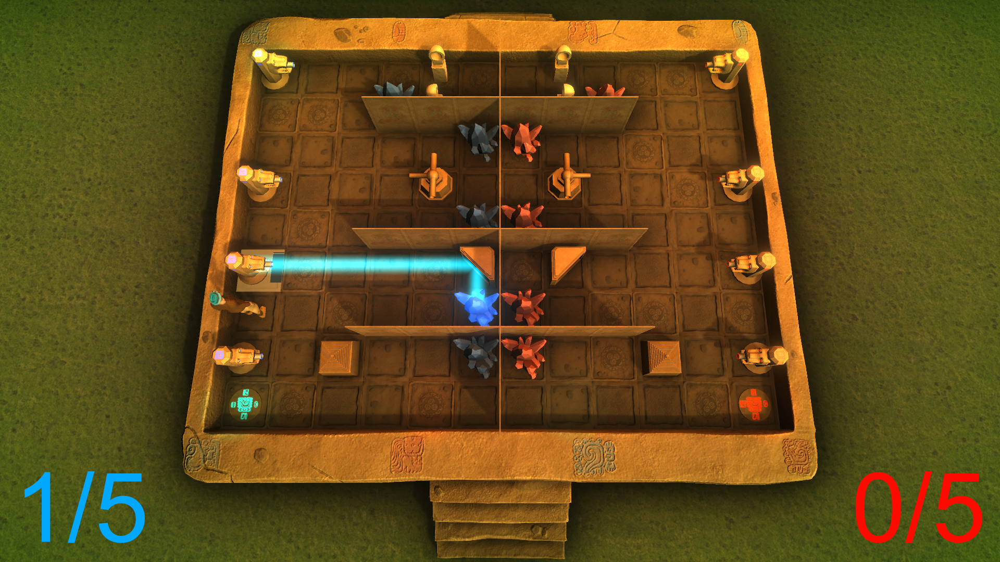

Beam Bounce
- Team project, developed as part of my coursework
- I worked in a team of 5, alongside another programmer and 3 artists
- Developed in Unity
- Helped design the mechanics of the game
- Programmed the mechanics and logic of the game
- Used agile development, planning our tasks on a Trello board and organising daily scrum meetings
Beam Bounce was developed as part of my coursework on Computer Science for Games. Developed as part of the group, we simulated a real work environment by working daily for a week closely together in an university lab, mimicking a full-time job. We used agile development, planning out individual tasks in advance using Trello plus, as well as having daily scrum meetings.
The design of the game was a collaborative effort. After bouncing several ideas off of each other and many iterations we settled on making a couch PvP game where each player is trying to hit a goal with their laser by manipulating different blocks (e.g. mirrors). This results in hectic, but fun gameplay as each player is trying to hit their own goal and hindering each other.
I implemented the core mechanics of the game, including the player control, picking up and placing blocks and the laser interaction with the blocks. Player movement and block placement is snapped on a grid. The game features gamepad support and up to 4 people playing at once.
 